Rappel de cours
I - Concentration molaire
La concentration molaire d’un constituant A, dissous dans un volume V de solution, est égale au quotient de la quantité de A dissous, soit n(A), par le volume V de la solution. Elle est notée C(A), ou [A] et s’exprime généralement en mol/l :
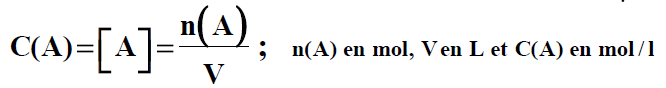
II - Concentration massique
La concentration massique d’un constituant A, dissous dans un volume V de solution, est égale au quotient de la masse m(A) du constituant A par le volume V de la solution. Elle est notée t(A) et s’exprime généralement en g/l :
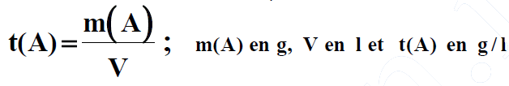
III - Masse Volumique
La masse volumique μ d’un corps est égale au quotient de la masse m du corps par son volume V :
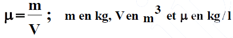
IV - Densité
La densité d’un corps par rapport à un corps de référence est égale au quotient de la masse m d’un volume V de ce corps par la masse mo d’un même volume V du corps de référence, pris dans les mêmes conditions de température et de précision:
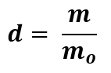
elle est aussi égale au rapport de la masse volumique μ du corps à celle μo du corps de référence
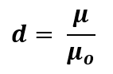
V - Pourcentage massique
Le pourcentage massique P(A) d’un constituant A dans un mélange est égal à cent fois le quotient de la masse m(A) de A dans le mélange par la masse m de ce mélange, m(A) et m étant exprimés dans la même unité.
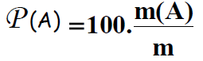
VI - Concentration d’une solution commerciale
Soit une solution commerciale de densité d, contenant en masse P% de produit de masse molaire M. La concentration Co de cette solution est :
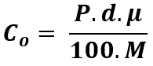
VII - Préparation des solutions :
Avant de procéder aux expériences il faut nécessairement connaître les produits.
Ceci demande alors une parfaite maîtrise de la préparation des solutions.
Pour préparer des solutions on doit penser aux problèmes suivants :
Trouver les récipients pour mettre les solutions. Trouver de l'eau, il sera très difficile d'avoir de l'eau distillée. De l'eau propre sera déjà un moindre mal.
Peser les produits purs : Vous disposer des balances. Elles sont peu précises.
Comme on ne doit jamais mettre de produit chimique directement dans le plateau, il faut un récipient. Mieux vaut donc utiliser la pesée a tare constante
1. Par dissolution d’un composé solide
1.1 Objectif :
Préparer un volume V de solution de concentration C par dissolution d’un composé de masse molaire M. La masse m à dissoudre vaut :
m = M.C.V / ( m en g ; M en g/mol ; V en L et C en mol/l.
1.2 Réalisation pratique
Soit à préparer, par exemple 200ml de solution de sulfate de cuivre (II) de concentration 0,2000 mol/l à partir de CuSO4, 5H2O de masse molaire
M = 249,7g/mol ; m = 249,7 x 0,200 x 0,200 = 2,50g
Les étapes de la préparation sont les suivantes :
1ère étape :
Pesons précisément m en prélevant le solide avec une spatule propre et sèche (b), et en le plaçant dans une capsule, ou un verre de montre, préalablement pesé (a).
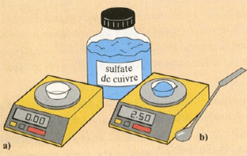
2ème étape :
Introduisons le solide dans une fiole jaugée de 200ml avec un entonnoir à solide.
Rinçons la capsule, ou le verre de montre, et l’entonnoir avec de l’eau distillée.
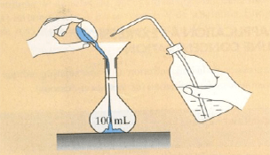
3ème étape : Remplissons la fiole jaugée aux trois quarts avec de l’eau distillée (a). Après l’avoir bouchée, agitons cette fiole jaugée pour dissoudre le solide (b).
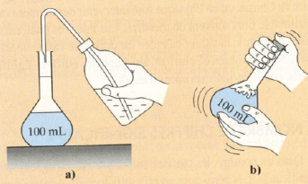
4ème étape : Une fois la dissolution terminée, ajoutons de l’eau distillée, à la pissette au début (a), puis à la pipette simple pour terminer au niveau du trait de jauge (b).
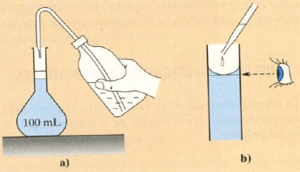
5ème étape : Rebouchons la fiole et retournons-la plusieurs fois pour bien homogénéiser la solution.
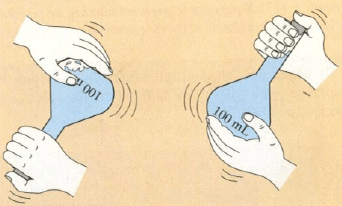
N.B : La solution ainsi préparée est stockée dans un flacon étiqueté.
2. Par dilution d’une solution de concentration connue
2.1 Objectif :
Préparer un volume V de solution de concentration C par dilution d’une solution de concentration Co connue précisément.
Le volume Vo à prélever vaut :
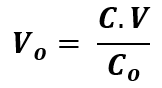
( C et Co en mol/l, V et Vo en ml)
2.2 Réalisation pratique
Soit à préparer, par exemple 50ml de solution de permanganate de potassium de concentration 2,00.10-2 mol/l par dilution d’une solution mère à 0,200 mol/l.
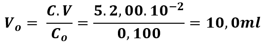
Les étapes de la préparation sont les suivantes :
1ère étape :
Versons la solution à diluer dans un bécher. Prélevons 10,0ml de solution à l’aide d’une pipette jaugée à un trait ou à deux traits munie d’une propipette ou d’un pipeteur (a et b).
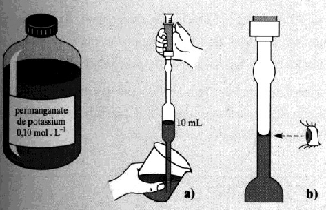
2ème étape :
La solution prélevée est introduite dans une fiole jaugée de 50ml (a et b).
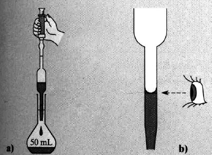
La fin de la préparation s’effectue comme pour la dissolution d’un composé solide :
- Ajoutons de l’eau distillée, à la pissette au début (a), puis à la pipette simple pour terminer au niveau du trait de jauge (b).
- Rebouchons la fiole et retournons-la plusieurs fois pour bien homogénéiser la solution.
N.B : La solution ainsi préparée est stockée dans un flacon étiqueté.
3 Par dilution d’une solution commerciale
3.1 Objectif :
Préparer un volume V de solution de concentration C par dilution d’une de densité d, contenant en masse P% de produit de masse molaire M. Le volume Vo à prélever est tel que C.V = Co.Vo avec :
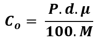
Soit
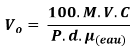
(Vo et V en ml, M en g/mol ; C en mol/l et 𝛍 en g/l)
3.2 Réalisation pratique
Soit à préparer, par exemple, 200ml de solution d’acide chlorhydrique à 0,50mol/l par dilution d’une solution commerciale de densité d = 1,16 contenant 37% de HCl.
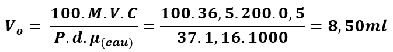